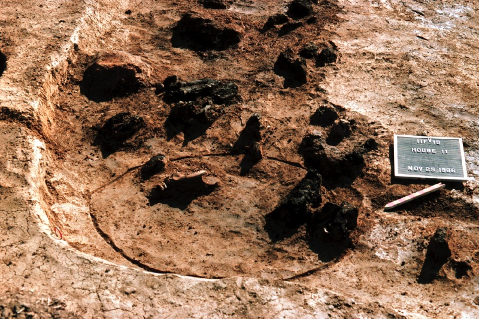
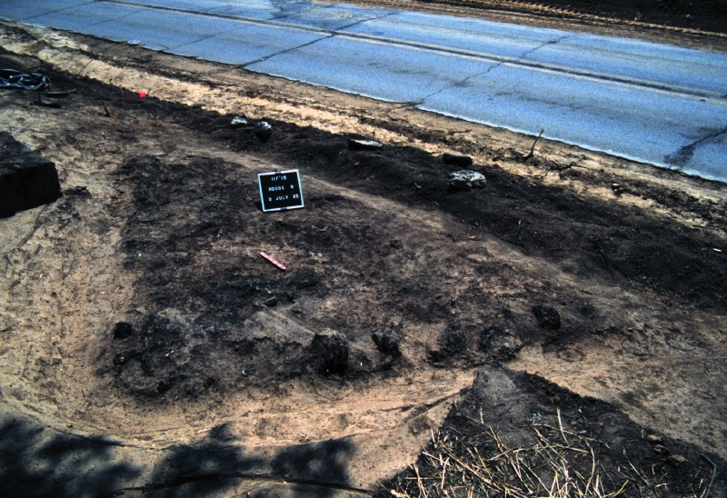
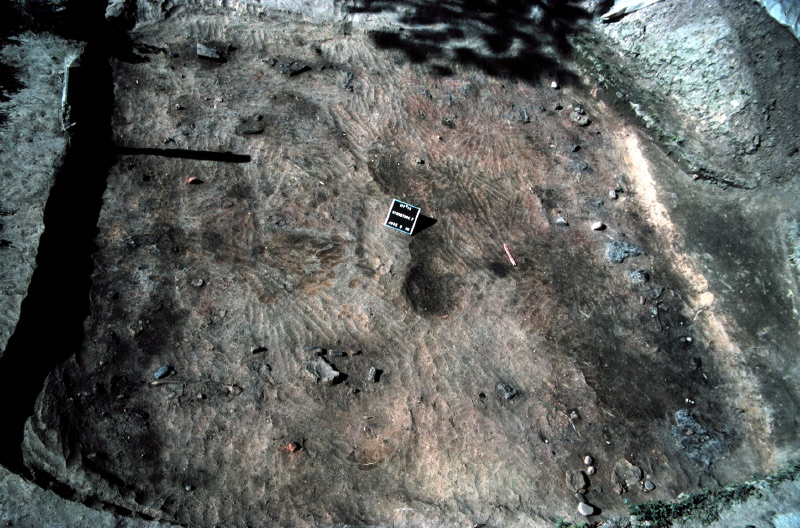
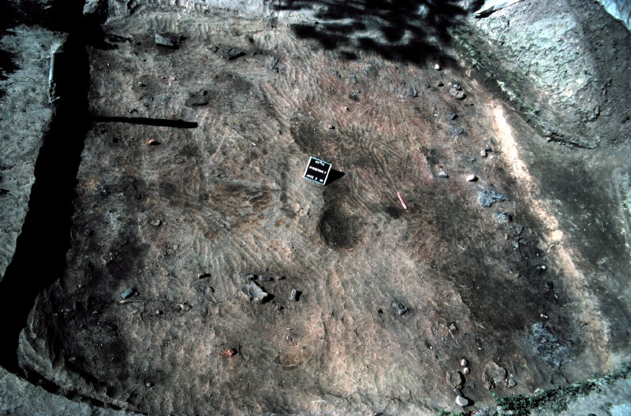

HOUSEHOLD ARCHAEOLOGY


Left: Here you can see the corner of Structure/House 11 with multiple posts and in situ artifacts, excavated in the 1980s. Right: Here you can see a portion of the floor of Structure/House 6, excavated in the 1980s and noticeably bisected by the highway.
Archaeologists excavate the houses and community structures left behind by past peoples. These structures reflect and shape a larger 'household' unit, that consist of multiple houses and related families working and living together. Households have activity areas, which reflect how these families used the space and can show archaeologists about the overall organization of the household, i.e. sleeping vs. cooking areas. Households are where people participate in their day-to-day lives, and understanding how the people who lived at Morton Village constructed their households can tell us about these experiences.
 

Left: Here you can see a circular structure excavated in the 1980s, with balks bisecting the structure in a cross-like pattern. Balks are a partition of earth left standing during excavations to aid in stratigraphic analysis. Right: Here you can see the floor of Structure/House 7, excavated in the 1980s, with multiple in situ artifacts in the floor.


{kind=link}
{kind=link}
{kind=link}